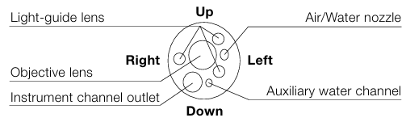
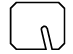

CF-EZ1500DL/I는 OLYMPUS의 EVIS X1 시스템과 호환되는 대장 내시경 스코프입니다. 이 스코프는 EDOF (Extended Depth of Field) 기술을 통해 근거리와 원거리 이미지를 결합하여 관찰 영역 전체에 깊은 심도를 제공하며, 지속적인 광범위 초점(wide focusing)으로 우수한 선명도와 디테일을 보장합니다. Full Focus 덕분에 일반 관찰 모드에서 3 mm 까지 근접하여 선명한 이미지를 얻을 수 있어 수동 초점 조정의 필요성을 줄여줍니다. 또한, 듀얼 포커스 스위치를 이용해 고배율 근접 관찰을 용이하게 하며, 이 모든 기능은 NBI 기술과 결합되어 정확하고 신뢰성 높은 광학 검사를 지원하도록 설계되었습니다. 그 외에도 RIT (반응형 삽입 기술), ErgoGrip (인체공학적 그립), Water Jet, 그리고 방수 원터치 커넥터 등 다양한 편의 기능들을 지원합니다.
EDOF Technology
당사의 독창적인 EDOF(Extended Depth of Field) 기술은 근거리에서 캡처된 이미지와 원거리에서 캡처된 이미지를 결합하여 관찰 영역 전체에 걸쳐 더 깊은 심도를 가진 이미지를 생성합니다. 이는 지속적인 넓은 초점(와이드 포커싱)으로 더 큰 선명도와 뛰어난 디테일을 보장하며 우수한 관찰을 가능하게 합니다.
Full Focus
EDOF 기술 덕분에 CF-EZ1500DL/I는 일반 초점 모드에서 관찰 대상에 3 mm만큼 가까이 접근할 수 있어, 일상적인 검사에서 초점 조절의 필요성을 줄이는 선명한 시야를 제공합니다.
High Magnification with the Ease of Dual Focus
CF-EZ1500DL/I는 간단한 스코프 스위치로 근거리 초점 모드를 작동시켜 고배율 관찰을 제공하며, 세부적인 관찰을 더욱 용이하게 합니다. 고배율과 넓은 심도의 조합은 관찰 대상이 움직이는지 여부와 상관없이, 접선 방향(가장자리)에서도 시야 전체에 걸쳐 더 선명하고 세밀한 이미징을 가능하게 합니다. 당사의 진보된 NBI 기술과 결합된 CF-EZ1500DL/I의 광학 시스템은 정확하고 신뢰성 높은 관찰을 돕도록 설계되었습니다.
Other Features
CV-1500에 연결 시 TXI, RDI 및 NBI와 호환 가능
ErgoGrip (인체공학적 그립)
RIT (반응형 삽입 기술, Responsive Insertion Technology)
ScopeGuide-ready (스코프 가이드 준비 완료)
170° 넓은 시야각 (Wide viewing angle)
WaterJet (물 분사 기능)
Waterproof one-touch connector (방수 원터치 커넥터)
| Optical System | Field of view |
Normal focus mode: 170° Near focus mode: 160° |
|---|---|---|
| Direction of view | Forward viewing | |
| Depth of field |
Nomal focus mode: 3-100mm Near focus mode: 1.5-5.5mm |
|
| Insertion Section | Distal end outer diameter | ø 13.2 mm |
| Distal end enlarged |  | |
| Insertion tube outer diameter | ø 12.8 mm | |
| Working length |
L : 1680 mm I : 1330 mm |
|
| Instrument Channel | Channel inner diameter | ø 3.7 mm |
| Minimum visible distance * | 4 mm (Noraml focus mode) | |
| Direction from which EndoTherapy accessories enter and exit the endoscopic image |  | |
| Auxiliary Water Channel | Direction from which water jet appears in the endoscopic image | |
| Bending Section | Angulation range |
Up 180° / Down 180° Right 160° / Left 160° |
| Total Length |
L : 2005 mm I : 1655 mm |
|
| Compatible System | Video system center OLYMPUS CV-1500 | |